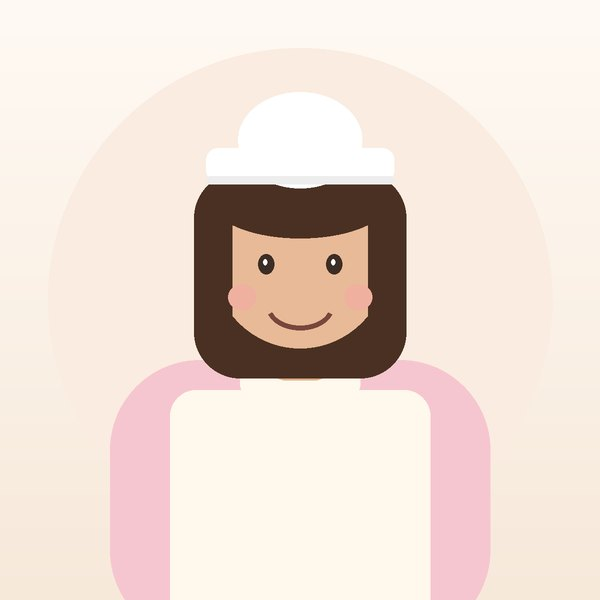

Shirley Cedeño
Fundadora y chef pastelera
Empezó vendiendo tortas desde su casa en 2012. Se encarga de las recetas base y de la decoración con flores naturales.
En Dulce Shirley desde 2012
Somos cuatro personas y todos hacemos de todo un poco: amasamos, decoramos, atendemos y entregamos. Estas son las personas que vas a encontrar detrás del mostrador.

Fundadora y chef pastelera
Empezó vendiendo tortas desde su casa en 2012. Se encarga de las recetas base y de la decoración con flores naturales.
En Dulce Shirley desde 2012
Repostero
Hace los hojaldres, los brownies y el pan dulce de los sábados. También controla el punto del horno.
En Dulce Shirley desde 2018
Pastelera de postres fríos
Es la responsable de los cheesecakes y los pies. Ajusta el dulzor de cada receta según la fruta de temporada.
En Dulce Shirley desde 2015
Atención al cliente
Recibe los pedidos, coordina las entregas de Portoviejo y avisa cuando un pastel está listo para retirar.
En Dulce Shirley desde 2021
Cuando necesitamos ayuda para temporadas altas, publicamos el aviso en el local. También puedes escribirnos a shirleycedeno98@gmail.com con tu experiencia y disponibilidad.